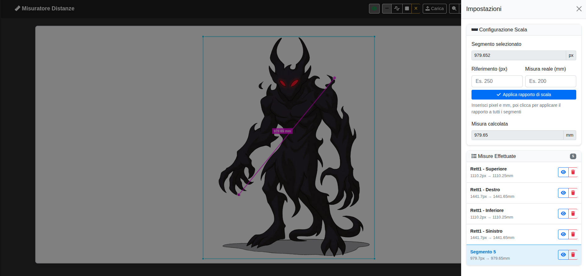
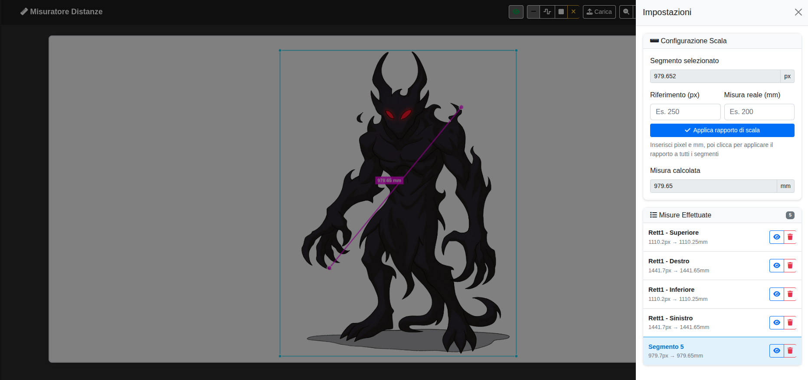

Project Overview
Sometimes when working on design or architectural projects, it's necessary to extract measurements from images or blueprints. IMG MEASURE is a handy tool that allows users to measure distances directly on an image and convert those measurements to a specified scale for accurate representation on paper.
Measurement Example for Drawing
The IMG MEASURE application can also be a valuable aid in the field of drawing, particularly for maintaining correct proportions in portraits. By measuring key distances on a reference image, such as the width of the eyes, the distance between the nose and mouth, or the length of the face, it is possible to transfer these proportions to your pencil drawing. This approach ensures greater accuracy and realism, especially in the initial sketching phases, where proportions are fundamental.


As shown in the example, the use of precise measurements helps establish the essential reference points of the face, allowing the artist to subsequently focus on details and nuances without worrying about proportional errors that could compromise the final result.